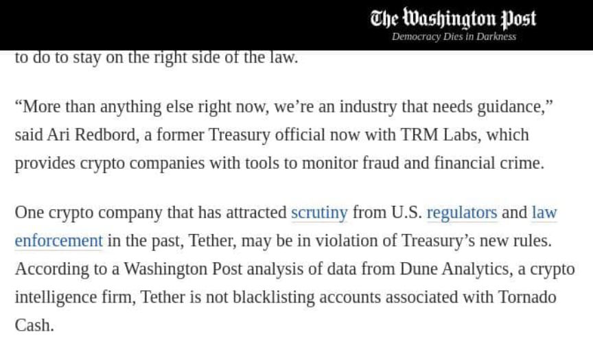
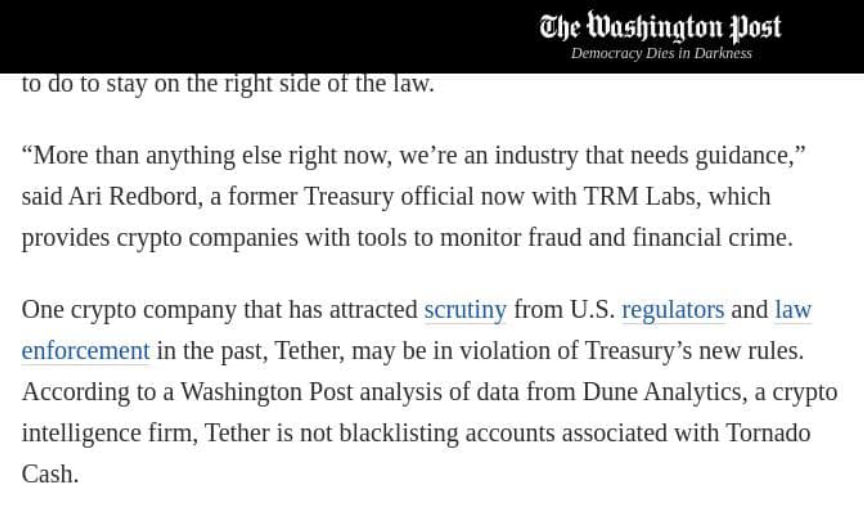

German Man Allegedly Tried to Hire a Killer on the Darkweb
~1 min read | Published on 2022-08-24, tagged DarkWeb, Murder-for-Hire using 248 words.
A 63-year-old from Stuttgart allegedly tried to hire a hitman on the darkweb to kill a relative.
Authorities arrested the man in April 2022 in Franconia. The arrest followed a tip from the Federal Criminal Police Office. The Stuttgart public prosecutor’s office has now filed charges.
There is not much information available about the case. nordbayern.de:
“Drugs, weapons or even a contract killer - criminals will find all kinds of things on the dark web. A 63-year-old from Stuttgart, who worked in Uffenheim in the Neustadt/Aisch-Bad Windsheim district, is now accused of attempted incitement to murder. At the end of April, the police arrested the man at his workplace on a tip from the Federal Criminal Police Office.”
“But what is the 63-year-old accused of? According to Johannes Steinbach, he is said to have given the order via the Darknet to have his brother poisoned. He probably made the decision to have his brother killed in 2021. Regarding the condition of the suspect, Steinbach explained that he “is said to be suffering from a chronic delusional disorder.” The man is currently temporarily housed in forensic psychiatry.”
These are getting old frankly. More interesting news is that the Washington Post is trying to get Tether in trouble for ignoring Tornado Cash sanctions. Imagine contacting the Treasury as well as government-staffed blockchain analytics companies because [em]Tether[/em] (based in Hong Kong) is not obeying the U.S. government. Wait until these people learn about Elude or Kilos.

Authorities arrested the man in April 2022 in Franconia. The arrest followed a tip from the Federal Criminal Police Office. The Stuttgart public prosecutor’s office has now filed charges.
There is not much information available about the case. nordbayern.de:
“Drugs, weapons or even a contract killer - criminals will find all kinds of things on the dark web. A 63-year-old from Stuttgart, who worked in Uffenheim in the Neustadt/Aisch-Bad Windsheim district, is now accused of attempted incitement to murder. At the end of April, the police arrested the man at his workplace on a tip from the Federal Criminal Police Office.”
“But what is the 63-year-old accused of? According to Johannes Steinbach, he is said to have given the order via the Darknet to have his brother poisoned. He probably made the decision to have his brother killed in 2021. Regarding the condition of the suspect, Steinbach explained that he “is said to be suffering from a chronic delusional disorder.” The man is currently temporarily housed in forensic psychiatry.”
These are getting old frankly. More interesting news is that the Washington Post is trying to get Tether in trouble for ignoring Tornado Cash sanctions. Imagine contacting the Treasury as well as government-staffed blockchain analytics companies because [em]Tether[/em] (based in Hong Kong) is not obeying the U.S. government. Wait until these people learn about Elude or Kilos.

A Tornado Cash developer might still have a Gmail account. Quick!